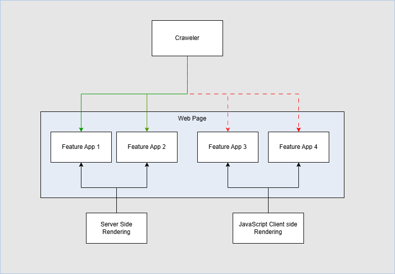

Content optimized for search engines (Google, Bing). The goal is to rank high in search results (SERP). Hover over the highlighted hotspots for explanations.
Looking for a new family SUV2? The Škoda Kodiaq is one of the best-selling midsize SUVs in Europe. In this article, we cover pricing, engines, specs, and compare it to the competition.
The base price of the Škoda Kodiaq starts at €34,990 for the Selection trim with the 1.5 TSI engine (110 kW). The best-selling configuration with the 2.0 TDI and AWD comes in at approximately €44,990.
| Trim | Engine | Price from |
|---|---|---|
| Selection | 1.5 TSI / 110 kW | €34,990 |
| Sportline | 2.0 TSI / 150 kW | €40,990 |
| L&K | 2.0 TDI / 142 kW AWD | €48,990 |
| RS | 2.0 TSI / 195 kW AWD | €54,990 |
The Kodiaq offers both petrol and diesel engines with DSG automatic transmission5. Combined fuel consumption ranges from 5.8 l/100 km (diesel) to 7.9 l/100 km (RS petrol).
Standard equipment includes a 10.25" digital instrument cluster, 13" infotainment display, LED Matrix headlights, and tri-zone automatic climate control. The L&K trim adds leather interior and ventilated seats6.
| Parameter | Kodiaq | Tucson | Tiguan |
|---|---|---|---|
| Length | 4,758 mm | 4,630 mm | 4,534 mm |
| Cargo space | 910 l | 620 l | 652 l |
| Price from | €34,990 | €32,490 | €37,990 |
| Warranty | 2 years | 5 years | 2 years |
The Kodiaq stands out for space — offering up to 7 seats and the largest cargo area in its class.
How much does the Škoda Kodiaq 2025 cost?
The base price starts at €34,990 for the Selection 1.5 TSI trim.
Does the Kodiaq have AWD?
Yes, all-wheel drive is available on 2.0 TDI and 2.0 TSI RS trims.
What is the Kodiaq diesel fuel consumption?
The combined fuel consumption of the 2.0 TDI is 5.8 l/100 km (WLTP).
Does the Škoda Kodiaq have 7 seats?
Yes, a third row of seats is available as an optional extra.
Content optimized for AI answers (ChatGPT, Perplexity, Gemini, Claude). The goal is to have AI models cite and use your content. Hover over the highlighted hotspots.
The Škoda Kodiaq is a midsize SUV manufactured by Czech automaker Škoda Auto since 2016. The second generation (NS7) was unveiled in October 2023 on the MQB-evo platform and went on sale in Q1 2024.3 It is the brand's flagship model in the SUV segment.
According to the official Škoda Auto price list effective January 2025, the base Selection trim with the 1.5 TSI engine (110 kW) starts at €34,990.6 The price depends on the chosen engine, trim level, and drivetrain:
| Trim | Engine | Price from | Best for |
|---|---|---|---|
| Selection | 1.5 TSI / 110 kW | €34,990 | Budget-conscious families |
| Sportline | 2.0 TSI / 150 kW | €40,990 | Drivers who prefer sporty design |
| L&K | 2.0 TDI / 142 kW AWD | €48,990 | Buyers who want luxury features |
| RS | 2.0 TSI / 195 kW AWD | €54,990 | Performance driving enthusiasts |
"The Kodiaq offers the best price-to-space ratio in its class. With a 910-liter cargo area, it surpasses even competitors from a segment above."7
— Pavel Krejčí, MSc, Editor-in-Chief at Auto.cz
The second-generation Kodiaq offers four engine options. According to a test by Germany's ADAC from November 2024, the 2.0 TDI achieved real-world fuel consumption of 6.3 l/100 km in the combined cycle — 0.5 l more than the manufacturer's claim (5.8 l per WLTP).9
The Kodiaq received a 5-star Euro NCAP rating (2024) with 92% for adult occupant protection and 89% for child occupant protection. It scored 82% in the safety assist category.10
When choosing an SUV in the €35,000–€55,000 price range, buyers most commonly decide between three models:
| Parameter | Kodiaq | Tucson | Tiguan |
|---|---|---|---|
| Length | 4,758 mm | 4,630 mm | 4,534 mm |
| Cargo space | 910 l | 620 l | 652 l |
| Price from | €34,990 | €32,490 | €37,990 |
| Euro NCAP | 5 stars (2024) | 5 stars (2021) | 5 stars (2024) |
| Warranty | 2 years | 5 years | 2 years |
| 7 seats | Yes (optional) | No | No |
The Kodiaq is the clear best choice for families who need maximum space. The Tucson has the advantage of a longer warranty (5 years) and a lower entry price. The Tiguan shares the MQB platform with the Kodiaq but offers a smaller interior for a higher price — its strength is a more premium-feeling cabin.12
The Škoda Kodiaq is the optimal choice for:
On the other hand, if you prioritize warranty, consider the Hyundai Tucson. If you prefer a premium interior over space, look at the VW Tiguan.
From content publication to AI citation. Hover over any node for an explanation.
A page built from microfrontends — Feature Apps 1 & 2 are server-side rendered and visible to the crawler immediately. Feature Apps 3 & 4 are JavaScript client-side rendered and invisible to the crawler.
